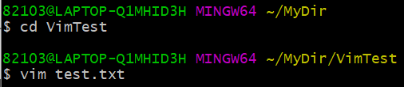
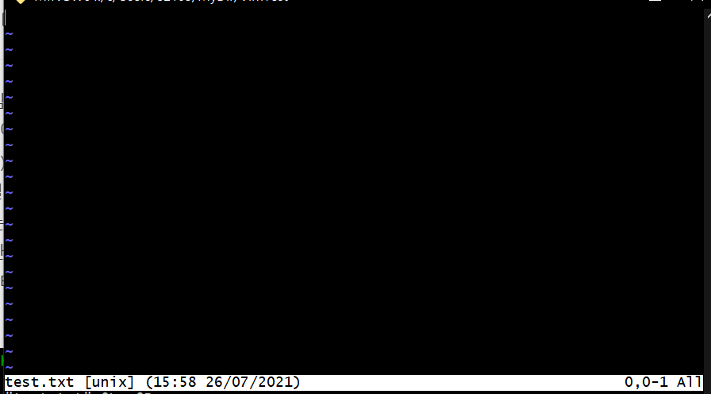
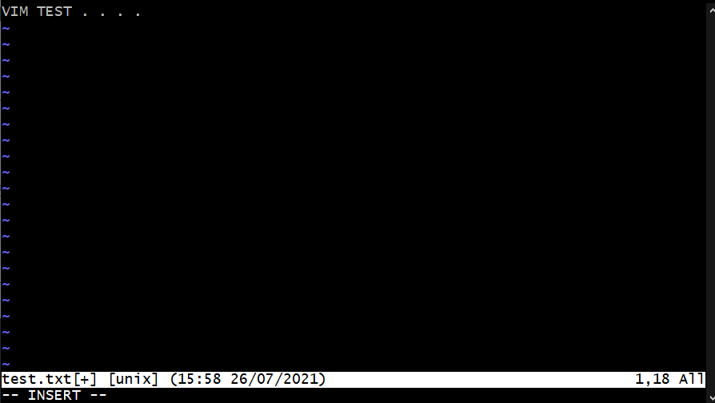
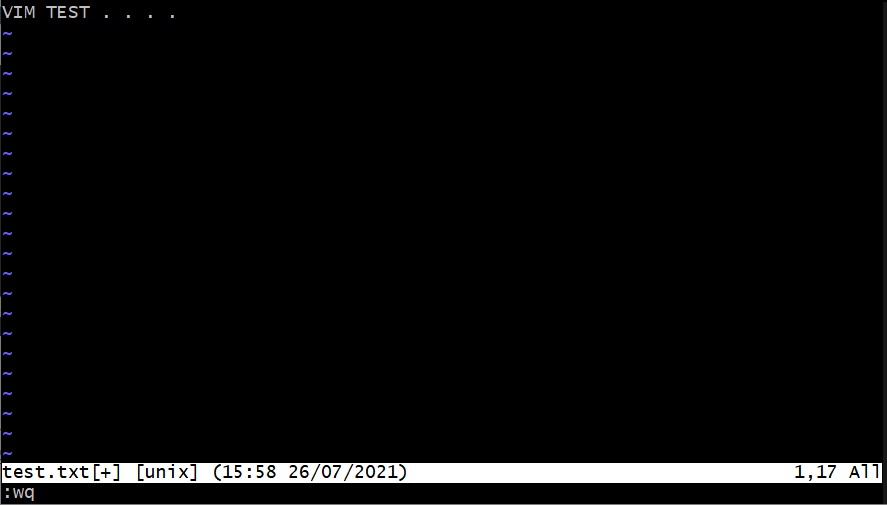
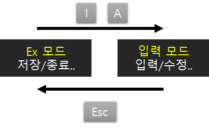
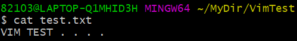

* 다음 포스팅은 깃(Git)의 사용방법에 대하여 정리한 것으로, 개인적인 공부 기록용으로 작성한 글 이기에 잘못된 내용을 포함하고 있을 수 있습니다.
* Window 운영체제를 기준으로 작성했습니다.
[목차]
#1 텍스트 파일 생성 및 열기 : vim
#2 입력 모드 & ex 모드
#3 텍스트 내용 확인 : cat
[Goal]
* 리눅스 편집기 Vim(빔)에 대한 이해
* 입력모드와 ex모드에 대한 내용 숙지
* cat 명령어로 텍스트 내용 출력하는 방법 숙지
#1 텍스트 파일 생성 및 열기 : vim
리눅스의 기본 편집기인 빔(Vim)은 터미널에서 사용 가능한 대표적인 텍스트 편집기이다. 빔은 터미널에서 마우스 클릭 없이 키보드 입력만으로 사용하기에, 윈도우의 메모장과는 사용 방법이 다르다. 이번 포스팅에서는 빔(Vim)의 사용 방법에 대해 간단하게 정리 하고자 한다.
텍스트 파일 생성 명령어는 "Vim 파일이름.txt"로, 입력한 파일 이름과 같은 파일이 없다면 입력한 이름으로 새로운 파일을 생성하고 파일이 존재한다면 그 파일은 연다.
다음은 VimTest 라는 디렉터리를 생성하고 VimTest 디렉터리 안에 vim 명령어를 이용해 test이름의 txt 파일을 생성한 예제이다.

#2 입력 모드 & ex 모드
txt 파일을 생성하면 자동으로 파일이 열린다. 좌측 상단에는 커서가 깜빡거리고, 좌측 하단에는 txt 파일의 이름이 출력된다.
그런데, 키보드를 입력해도 아무런 반응이 없을 것이다. 그 이유는 현재 ex 모드로 설정 되어 있기 때문이다.
Vim(빔)은 문서를 작성하는 "입력 모드"와 문서를 저장하는 "ex 모드" 가 있다.

내용을 입력하기 위해선, 입력 모드로 변경해 주어야 한다. 입력 모드로 변경하기 방법은 키보드 자판의 I 키 혹은 A 키를 누르면 된다. I는 Insert(삽입) A는 Add(추가)의 약자이다.

입력모드로 전환되면 좌측 하단에 -- INSERT -- 라는 문구가 출력된다. 이제 문장을 입력할 수 있다. 입력을 끝마치고, ESC 키를 누르면 다시 ex모드로 돌아간다.
다음으로 ":wq" 명령을 입력하고 Enter 를 누르면 입력 내용이 저장되고 txt 파일을 닫는다. w는 저장 , q는 종료를 실행하는 명령어이다. w는 write q는 quit의 약자이다.
 
#3 텍스트 내용 확인 : cat
"cat 파일이름.txt" 명령을 통해 간단하게 텍스트 안의 내용을 확인 가능하다.
다음은 cat 명령을 통해 앞에서 생성한 test.txt 파일의 내용을 출력한 예제이다.
